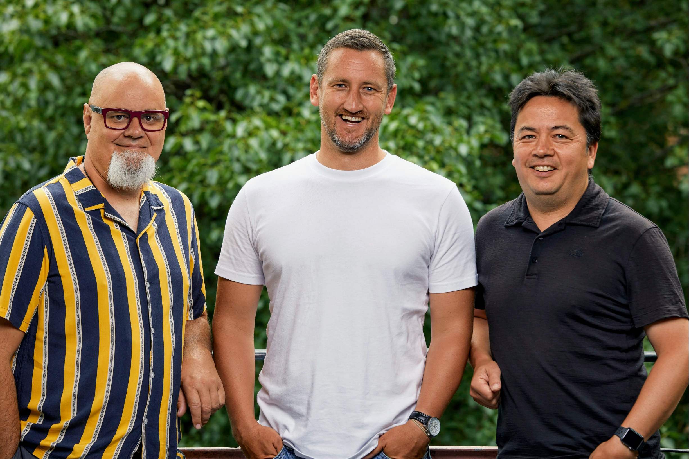

| |
| Wellington based Marvel Labs are pleased to announce the sale of Configurable - an advanced energy retail pricing system for a smart grid world - to UK tech unicorn Octopus Energy Group. Marvel Labs founders - Mark Soper, Ari Sargent and Dan Lee - are excited to be joining forces with an organisation that has a global reach and who shares our ambitions to play a major role in accelerating the decarbonisation of electricity systems and the transition to a net zero world through use of smart technology. All Marvel Labs employees have now joined the Octopus Energy Group. Greg Jackson, CEO and founder of Octopus Energy Group, said “Octopus Energy are absolutely delighted to welcome such like-minded entrepreneurs into the family. Their deep energy expertise and proprietary technology will help us drive the green energy revolution globally.” |
|
|  | |
Marvel Labs founders Ari Sargent, Mark Soper and Dan Lee join forces with UK energy tech unicorn Octopus Energy following the sale of “Configurable” energy pricing software. | |